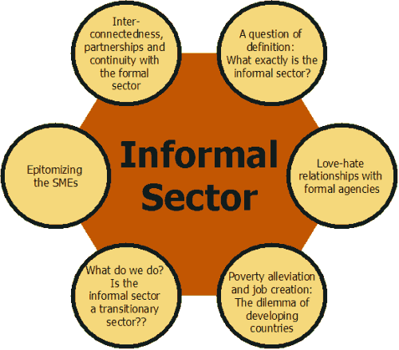
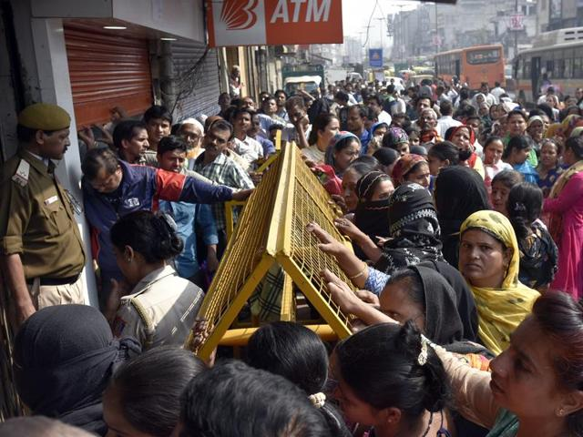

1.)Adverse Impact on Informal SectorPlayers of informal sector as they mainly deals in cash only are facing tough time due to this Demonetization scheme already. Sudden removal of cash from market put their business on a dormant phase. It is important to understand that their income is not black as they don’t come under income tax slab because of less income which has become even lesser now. |
 |
|
2.)Plight of Primary ProducersLack of liquidity would result in distress to primary producers who don’t have much money, so that they could hold their produce for long and on the other side due to lack of currency in flow they are offered very less by the buyers in the market. |
3.)Possibility of breaking RiotsThere are many anti-state elements present in the society who are trying to spread unrest in the society. They can exploit the situation and incite those disheartened people to make a platform to break riots. |
 |
4.)Decrease in DemandThis is a fact that black economy do support the real economy from demand side, that is to say black money used by the consumers to buy goods or services increases demand for those. Although you may say this is unethical or wrong but it is beneficial from economy’s point of view. |
5.)Violation of Rule by General PublicAs we all know the hype in real estate prices is because of the circulation of black money in this market. Now from this step almost all that black money would get out of circulation from this sector. Eventually the sky touching prices of properties will come down to the reach of a common man. Finally a common man can buy his dream home soon. Hopefully! |